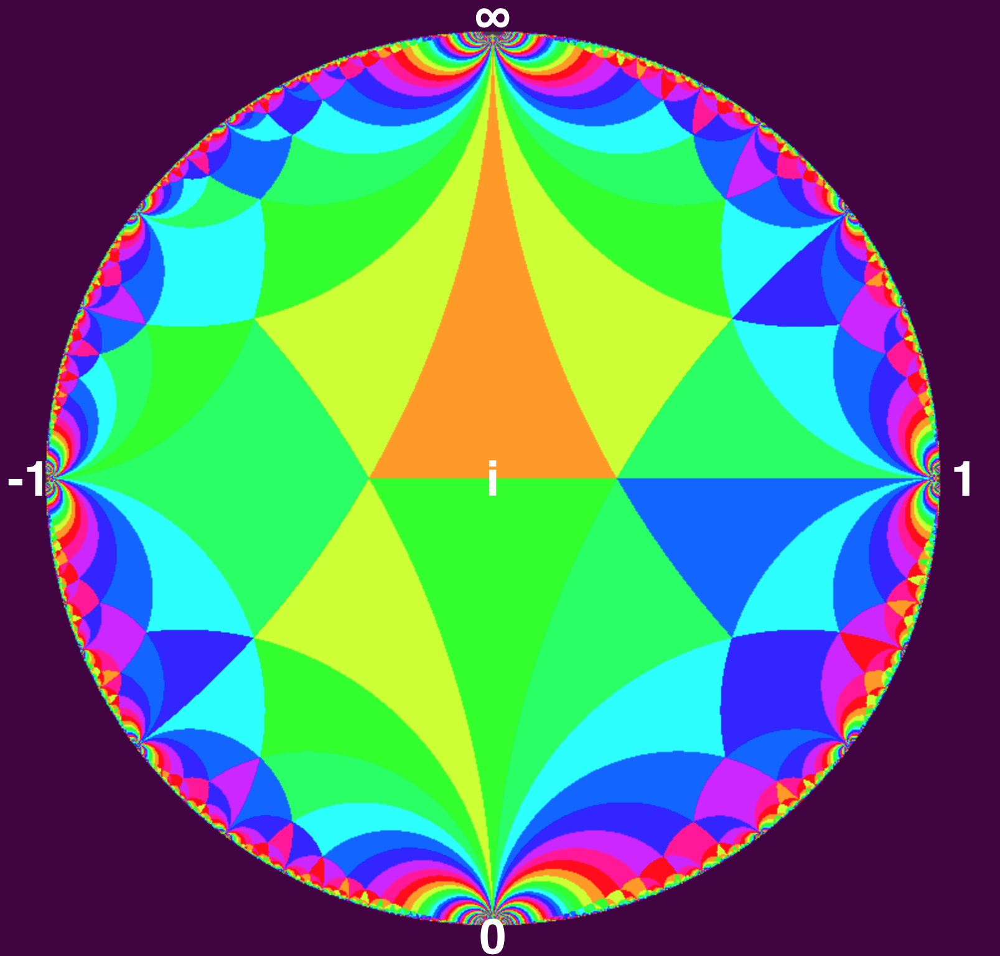
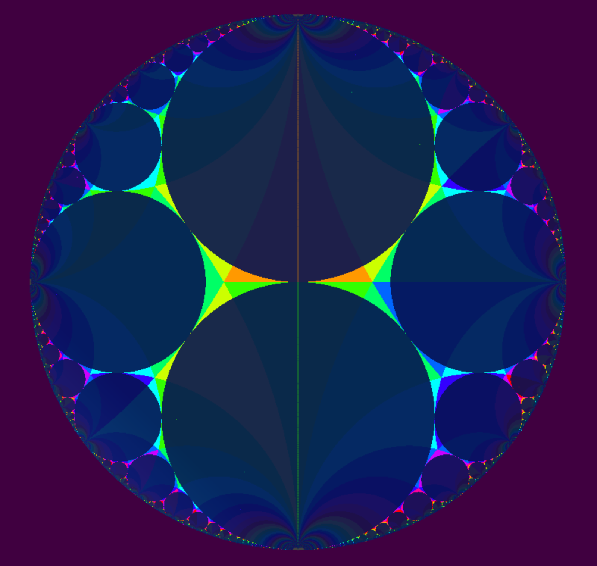
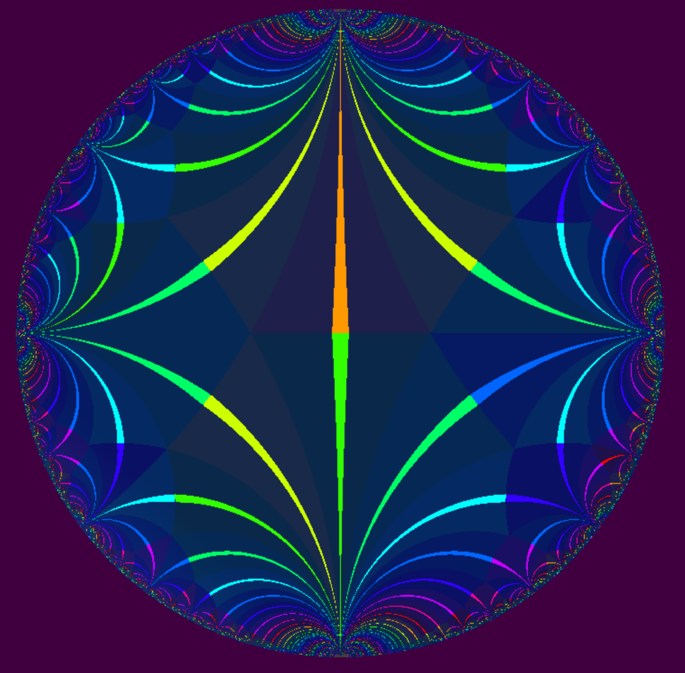

Here is an image of a tessellation or tiling of the upper half-plane. Under some group of symmetries, an initial triangle (for instance the one in orange) covers the plane without overlaps. (The initial triangle is not ideal because only one of its angles is 0). The group of symmetries used are those of the modular group. See my previous post where I go into this in greater detail.
 Tessellation of the upper half plane using the symmetries of the Modular Group.
Note that each triangle has a vertex on the rim of the circle. The rim of the circle is the real projective number line.
The orange initial triangle, aka the fundamental domain, is touching the real number line at the point of infinity. The green triangle right below the orange triangle touches the real number line at the point 0. The green triangle = S(orange triangle), where S -> -1/z. Every other vertex touching the rim of the disc can be obtained by applying some combination of S and T. (T->z+1).
Ford Circles
Lets start with 2 circles, one with a radius=1 touching at 0. Another is a line, Im(z) = 1 (a circle with an infinite radius that is). These are the 2 large circles in the picture below. If we then apply S and T repeatedly we get the Ford circles.
The set of points where the circles touch the real number line is the set of rational numbers, Q. This is the same set of points where the vertexes of the tessellated initial triangles touch the rim.
From [4], I learned the following interesting facts:
- The circle touching the real axis at the reduced fraction a/c has radius 1/2c². This explains why the circles for reduced fraction a/c and a’/c have the same radius.
- The circles touching z = a/c and z = b/d > a/c are tangential to each other because ad − bc = 1. Such circles are images of the 2 initial circles touching z = 0 and z = ∞ under SL(2, Z) (determinant = 1).
- The circle between these tangential circles touches at (a+b)/(c+d). Because the latter circle is the image of the circle between the circles touching z = 0 and z = ∞, namely the circle touching z = 1, under .
The formula (a+b)/(c+d) is the formula for calculating a mediant between 2 Farey neighbors, a/b and c/d.
 Ford Circles
“The Farey graph is the PSL(2,Z) images of the imaginary axis, and so contains all of Q* as its points at infinity. It is not hard to see that p/q and r/s are connected by an edge iff ps-qr = +/-1, so it is in some sense a geometric recording of the matrix group.” [1]
Here the images of the imaginary axis are highlighted and the Farey graph is evident:
 Farey Graph
[1] http://mduchin.math.tufts.edu/notes/hyp-groups-course.pdf
[2] “Indra’s Pearls”, pages 210-213.
[3] http://homepages.warwick.ac.uk/~masbb/HypGeomandCntdFractions-2.pdf
[4] http://www.maths.ed.ac.uk/~aar/Whittaker2012A
Tesselations of the Reimann Sphere...
Congruence Group Γ(2)